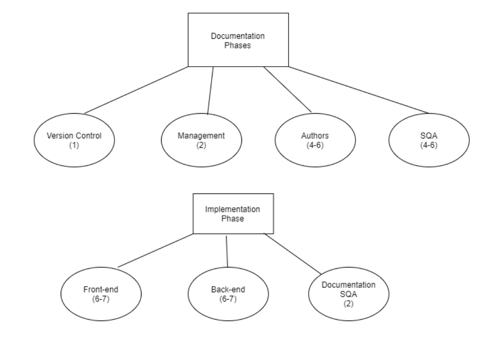

Version 2.0
| Date | Version | Member | Description |
|---|---|---|---|
| 1/20/2021 | 1.0 | Janelle Tait | Created SPMP layout |
| 1/23/2021 | 1.0 | Janelle Tait | Finished Section 1 and 5 |
| 1/27/2021 | 1.0 | Ann Baldonasa | Added to Section 1 and completed sections 1, 2, 3, 4 |
| 2/1/2021 | 1.0 | Arshdeep Sahi | Intro and Section 6 |
| 2/1/2021 | 1.0 | Dayton Talarico | Section 7 |
| 2/2/2021 | 1.0 | Ann Baldonasa | Revised Section 4 |
| 2/2/2021 | 1.0 | Shyam Dave | SQA for the Version 1 Doc |
| 2/2/2021 | 1.0 | Matthew Francis | SQA for the Version 1 Doc |
| 2/3/2021 | 1.0 | Evan Surtel | SQA for the Version 1 Doc |
| 2/3/2021 | 1.0 | Arshdeep Sahi | Revised Introduction, List of figures, and Section 6 |
| 2/3/2021 | 1.0 | Janelle Tait | Revised section 5 based on sqa suggestions |
| 2/3/2021 | 1.0 | Dayton Talarico | Revised section 7 based on sqa suggestions |
| 2/3/2021 | 1.0 | Ann Baldonasa | Revised section 1 based on SQA suggestions |
| 2/5/2021 | 1.0 | Ann Baldonasa | Revised sections 1, 2, 3, 4 based on SQA suggestions |
| 3/30/2021 | 2.0 | Ann Baldonasa | Revised section 4 (Group organization, Project Responsibilities, & Internal structure) |
| 4/07/2021 | 2.0 | Dayton Talarico | Adjusted section 5.2.1 (Work activities and schedule allocation) to match actual deadlines |
| 4/07/2021 | 2.0 | Janelle Tait | Adjusted section 5.2.1 (Work activities and schedule allocation) to match actual deadlines |
The purpose of this document is to serve as a guide for development of the project and to ensure that all requirements are met and the product functions according to the requirements outlined in the specifications document.
The SPMP will detail the major activities, resources, schedules, and milestones for developing Study Space. This will be accomplished with comprehensive descriptions and supplemental information for each aspect of the development process, being as thorough as possible.
StudySpace is a web application that provides university students with access to virtual study spaces and several other useful tools to help them succeed in school.
The StudySpace app is a multi-purpose web application that provides students with the following functions:
The purpose of this document is to provide the developers of the StudySpace app easy access to the project's deliverables, scope, purpose, plans, processes, and the team's organizational structure.
Activities that fulfil the requirements are within the scope of this project.
The team considers Mr. David Brown as the project client for the StudySpace app.
The team considers university students (as defined in the StudySpace Software Requirements Specifications document) as the target audience for the StudySpace app.
Possible indirect audiences may include:
The team is subjected to the following constraints.
The team has the following assumptions with respect to the completion of the StudySpace app.
Documentation.
Each documentation phase (SRS, SPMP, Requirements, Design, Analysis) will occur as described.
Availability.
Skills.
The dependencies are:
| Deliverables | Date |
|---|---|
| SPMP | February 5, 2021 |
| Software requirements specifications (SRS) | February 12, 2021 |
| Analysis | March 5, 2021 |
| Design | March 26, 2021 |
| Implementation | April 12, 2021 |
| Goal | Deadline |
|---|---|
| Initial draft | January 29, 2021 |
| Initial draft (SQA) | January 31, 2021 |
| Final draft | February 2, 2021 |
| Additional edits [1] | April 12, 2021 |
Notes:
| API | Application Programming Interface. | |||||||
|---|---|---|---|---|---|---|---|---|
| APP | App refers to the product created by the team, the StudySpace app. | |||||||
| CONSISTENT DESIGN | Consistent design covers: color scheme, font sizes, font choices, and any other potential visual components. | |||||||
| PROJECT CLIENT | This product was made for the use of Mr. David Brown, who is the initial User that is not part of the team to use and test this application. | |||||||
| SECONDARY AUDIENCE | Secondary audiences consist of StudySpace app Users that are not 1) the project client and 2) the target audience. Examples of those who may be part of the Secondary Audience include: tutors, university professors, and the university board of directors. | |||||||
| SRS | A document that states the project's Software Requirements Specifications. | |||||||
| STUDENT | A student is a user enrolled in any Canadian university. | |||||||
| STUDY SPACE | StudySpace refers to the web application created by the team for the project client, Mr. David Brown. | |||||||
| TARGET AUDIENCE | This product was created to solve areas most commonly experienced by university students. | |||||||
| TEAM | Team refers to students in CP317's Team 2 for the Winter semester in 2021. | |||||||
| TUTOR | A tutor can be a student, professor, or a 3rd party that offers teaching services to any student(s). | |||||||
| UI | User interface. The StudySense app UI consists of various views such as the Profile View, the Search Bar View, the Create New Post View, the Live Discussion View, the Chat Box View, the Group Chat View. | |||||||
| USER | A user is someone who uses the application; likely a student. There are many possible Users. For example, there may be university professors wishing to participate in live student discussions by creating an account and are therefore Users of the app. | |||||||
For further definitions, see: StudySpace Software Requirements Specifications document Section 1.3.
The acquiring organization of the project and the documentation(s) accompanying the project is Wilfrid Laurier University.
This project was produced to fulfil CP317 course requirements.
Entities that interact with the product will include students from the team but may include various students from other universities and indirect audiences.
The team did not follow the structure (shown in the table documented below) for the first two phases (Software Requirements Specifications and Software Project Management Plan), so the group structure differs in terms of level of responsibility and the presence of a Management and Version Control teams further discussed in the Section 4.2.2.
| Deliverable | Initial Authors | Review (SQA) |
|---|---|---|
| Specifications | Arvin, Brian, David, Mackenzie, Matthew, Muhammad Hashir, Shyam, Zeeshan, Janelle | Rohan, Dayton, Ann |
| SPMP | Arshdeep, Ann, Janelle, Jordan | Shyam, Matthew, Evan, Zeeshan, David |
In future phases, the team structure will differ to provide further organization and structure.
Documentation
Implementation
Frontend team
Backend team
Software Quality Assurance (SQA)
Documentation SQA
The diagram below should provide further clarification on the internal structure for future documentation phases and the Implementation phase.
Notes:

| Deliverable | Authors (5-6) | Review (SQA) (4) | Management (1-2) | Version Control (1-2) |
|---|---|---|---|---|
| Specifications (SRS) | Arvin, Brian, David, Mackenzie, Matthew, Muhammad Hashir, Shyam, Zeeshan, Janelle, Ann | Rohan, Dayton | N/A | Rohan |
| SPMP | Arshdeep, Ann, Janelle, Dayton | Shyam, Matthew, Evan, Zeeshan, David | N/A | Rohan |
| Requirements | Mackenzie, Dayton, Arvin, Muhammad Hashir, Janelle, Rohan | Arshdeep, Shyam, Matthew, Evan, David | Ann, Janelle | Matthew |
| Analysis | Arshdeep, Zeeshan, Brian, Matthew, Evan, Shyam | Janelle, Arvin, Muhammad Hashir, Mackenzie, David | Janelle, Dayton | Ann |
| Design | Arvin, Muhammad Hashir, Kevin, Zeeshan, Ann | Rohan, Janelle, Mackenzie, Brian, David, Dayton | Janelle, Dayton | Rohan |
| Implementation: Frontend | Matthew, Zeeshan, Arvin, Muhammad Hashir, Rohan | Backend team | Frontend team | |
| Implementation: Backend | Mackenzie, Kevin, Shyam, Ann, Evan, Brian, David | Frontend team | Backend team | |
| Team Organization: Final | Dayton, Janelle | Ann | Ann |
The objective of this project is to produce a web application that provides post-secondary students with several tools, including virtual groups for studying and networking with new peers. The main target audience for this product is post-secondary students. However, secondary target audiences include tutors, alumni, and anyone looking to buy or sell textbooks. The main objective is to complete all workflows of the project by their respective deadlines, as determined by the professor. The main priorities are quality of work and time efficiency. Budget is not a priority because there is no intention for any amount of money to be spent on this project.
Each work activity has been scheduled in such a way that maximizes opportunities for different tasks to be done concurrently. Since each successive phase depends on having an established, agreed upon plan provided by the previous phases, it must be ensured that the next phase is never started before the deadline for SQA of the previous phase.
The resources used to complete the various work activities mentioned here include Google docs and GitHub. Google docs is used for writing the various drafts of each document and for the SQA team to make suggestions via the comment feature. GitHub is used to organize the documents and for general coordination of group processes.
| Phase | Starting | Deadline for first draft to be submitted to SQA | Deadline for SQA to finish Assessment | Deadline for final revision | Convert document to HTML by | Deadline to submit final product |
|---|---|---|---|---|---|---|
| Specifications | Jan. 18 | Jan. 23 | Jan. 25 | Jan. 28 | Jan. 29 | Jan. 29 |
| SPMP | Jan. 26 | Jan. 30 | Feb. 2 | Feb. 4 | Feb. 4 | Feb. 5 |
| Requirements | Feb. 5 | Feb. 9 | Feb. 10 | Feb. 11 | Feb. 11 | Feb. 12 |
| Analysis | Feb.20 | Feb.28 | Mar. 1 | Mar. 4 | Mar. 4 | Mar. 5 |
| Design | Mar. 6 | Mar. 18 | Mar. 23 | Mar. 25 | Mar. 26 | Mar. 26 |
| Implementation | Mar. 29 | N/A | N/A | Apr.11 | Apr.12 | Apr. 12 |
Mechanisms used to measure progress and compare actual progress against planned progress include:
When actual progress doesn’t meet planned progress, corrective actions include:
Mechanisms used to control quality of work include:
| Likelihood/Impact | Catastrophic | Critical | Significant | Marginal |
|---|---|---|---|---|
| Very Likely | none | R1 | R2 | none |
| Likely | none | none | R3 | none |
| Unlikely | none | none | none | none |
| Very Unlikely | none | none | none | none |
R1: Could run out of time since we have a very tight schedule.
Mitigation strategy.
R2: There will be many technical difficulties throughout the implementation phase because most group members are inexperienced with working on projects of this size.
Mitigation strategy.
R3: We might be underestimating the time, effort, and skills required to implement our project.
Mitigation strategy.
Development of the application is broken down into several documentation and implementation phases. Each phase is assigned a team of developers holding various roles that each focus on a specific work activity. Using the following organization, every aspect of development is streamlined and done effectively.
Documentation
Implementation
The entire team will discuss the model and features we hope to implement and then assign each task to the appropriate team. Once major milestones are met, each teams’ work will be combined and a review team will ensure everything is working seamlessly.
The developers will use Discord and Github to stay organized and coordinated. Developers will use VSCode along with any required plugins to write the code itself and use git commands to push any changes to the main project. All developers will agree to write code in a consistent style regarding things like brackets, comments, and indentation. A set standard will be agreed upon and all written code will be reviewed to ensure the standards are met. The appropriate database management software will be used to store and manage the user data and a schema of the database will be generated in said software.
The verification plan is to identify and ensure that features/activities establish abidance of the requirements. Each features’ code will be tested by their original developers followed by another member of the development team and a final review given by a member of the software quality assurance team. Github will be used in order to track each document's revision history.
The validation plan ensures that the application will meet customers’ expectations. Following the verification plan the same process will be met in validating that each activity on the front end of the application is working to the customers’ satisfaction.
Deadlines for each deliverable can be seen in the table displayed in Section 5.2.1. Work Activities and Schedule Allocation.
Each deliverable will be met by the following teams:
Authors:
Quality Assurance Team (SQA):
Management Team:
Version Control Team:
The Quality Assurance plan is managed by the quality assurance team of any given deliverable. This ensures that the final product of each deliverable complies to the satisfaction of the intended audience.
The Problem Resolution plan is managed by the management team of any given deliverable. This plan ensures that corrective actions will be taken when a problem occurs.
These actions will be communicated via the team Discord server in which there are channels dedicated to each deliverable.
| SPMP | ||||||||
|---|---|---|---|---|---|---|---|---|
| Date of Entry |
Contributor | Version | Section | Description of Issue | Status | Comments | Resolved by | Date of Resolution |
| 3/30/2021 | Dbrown | 1.0 | 4.2.2 | Elaborate on fuzz testing. He said, "Interesting reference to 'fuzz testing' - would like to see more detail about how that is to be done, tools used, etc." | done | Ann | 3/30/2021 | |
| 3/30/2021 | Dbrown | 1.0 | 4.2.2. | Unclear diagram for Group Structure. He said, "Not as clear on the diagram in section 4.2.2: 'Back End' shows up as both an oval and a rectangle, and I'm not clear on what the differences are." | done | Ann | 3/30/2021 | |
| 3/30/2021 | Dbrown | 1.0 | Formatting and hosting issue. He said, "List of Figures and Tables' should link directly to that figure, not the section, and the figure should be titled." | |||||
| 3/30/2021 | Dbrown | 1.0 | Missing Group structure diagram to know who does what in all of the phases. He said, "Would like to see details of who is working on what section for material beyond the SPMP" | done | Ann | 3/30/2021 | ||
| 3/30/2021 | Dbrown | 1.0 | 1.1.6 | Change project deadline for Implementation to April 12, 2021 | done | Ann | 3/30/2021 | |
| 4/7/2021 | Dayton | 2.0 | 5.2.1 | Make sure schedule is corrected, member allocation based on actual participation | done | Dayton, Janelle | 4/7/2021 | |
| Specifications | ||||||||
| Date of Entry | Contributor | Version | Section | Description of Issue | Status | Comments | Resolved by | Date of Resolution |
| 3/30/2021 | Dbrown | 1.5 | 1.2 | "Update Scope to clarify difference between StudySpace and something like MyLS (wrt chat rooms, discussions, groups)" | done | Explained distinction from other applications | Janelle | 4/7/2021 |
| 3/30/2021 | Dbrown | 1.5 | 1.2 | "And be careful with the use of vague phrases such as "make it easier". As compared to what, specifically? What is it about this that is going to be easier?" | done | Changed to "help" to be more concise | Janelle | 4/7/2021 |
| 3/30/2021 | Ann | 1.5 | 1.3 | Decide if we still need to have Private/Public Desks | done | In design we decided to keep this feature | Janelle | 4/7/2021 |
| 3/30/2021 | Ann | 1.5 | 1.3 | Decide if we still need to have Private/Public Groups | done | This is no longer included (REMOVED) | Dayton | 4/7/2021 |
| 4/7/2021 | Janelle | 1.5 | 6 | Version 1.1, 1.3, 1.5 and 1.6 sections missing from host | ||||
| 4/7/2021 | Dayton | 1.6 | 2.2 | Remove Public/Private groups and any mentioning of them in other defintions | done | Dayton | 4/7/2021 | |
| 4/7/2021 | Janelle | 1.6 | 3.1 | Remove layouts requirements because we decided not to support mobile devices | done | Janelle | 4/7/2021 | |
| 4/7/2021 | Janelle | 1.6 | 1.3 | Removed voice chat and tutors definitions because they are not being implemented | done | Janelle | 4/7/2021 | |
| 4/7/2021 | Janelle | 1.6 | 3.2 | Updated password requirements | done | Password requirements now reflect those outlined in design data dictionary | Janelle | 4/7/2021 |
| 4/7/2021 | Dayton | 1.6 | 3.3 | Update Logical Database Requirements based on design doc | done | Dayton | 4/7/2021 | |
| 4/7/2021 | Janelle | 1.6 | 2.5 | Remove mentioning of mobile device compatibility | done | Janelle | 4/7/2021 | |
| 4/7/2021 | Janelle | 1.6 | 3.4.2 | Remove mentioning of mobile device compatibility | done | Janelle | 4/7/2021 | |
| Requirements Specifications | ||||||||
| Date of Entry | Contributor | Version | Section | Description of Issue | Status | Comments | Resolved by | Date of Resolution |
| 3/13/2021 | Ann | 1.3 | 1.3 | Remove mention of Tutors | done | Dayton | 3/24/2021 | |
| 3/19/2021 | Dayton | 1.3 | 1.3 | Add Interests definition and remove mentioning of "preferences" | done | Janelle/Dayton | 3/24/2021 | |
| 3/24/2021 | Janelle | 1.3 | 3.2 | Update section 3.2 to match design document | done | Janelle | 3/24/2021 | |
| 3/30/2021 | Ann | 1.3 | 2.1.1. | Update User Interfaces to be consistent from Design Section 9 (e.g. the color schemes are different) | done | Dayton | 4/10/2021 | |
| 3/30/2021 | Dbrown | 1.3 | 2.3 | "Create Moderator and Delete Moderator are separate use cases so no line should connect between either use case" | done | Dayton | 4/10/2021 | |
| 3/30/2021 | Ann | 1.3 | 2.3 | Decide if Moderator and Administrators need to be removed | done | Both are in the design doc, as long as they are used in implementation then they will remain in the requirements doc | Janelle | 4/10/2021 |
| 3/30/2021 | Dbrown | 1.3 | 2.3 | "Not clear why the user has a password, but the 'User sign-in' (3.1) specifies "There are no password requirements"." | done | Janelle | 4/10/2021 | |
| 4/7/2021 | Dayton | 1.4 | 1.3 | Add Upvote/Downvote definition as it has been decided to keep | done | Dayton | 4/7/2021 | |
| Analysis | ||||||||
| Date of Entry | Contributor | Version | Section | Description of Issue | Status | Comments | Resolved by | Date of Resolution |
| 3/13/2021 | Ann | 1.4 | Decide if Moderator and Administrators need to be removed | done | Both are in the design doc, as long as they are used in implementation then they will remain in the requirements doc | Janelle | 4/10/2021 | |
| 3/19/2021 | Mackenzie | 1.4 | Database design differs from UML class diagram | done | Replaced old UML class diagram with the diagram from section 7.1 in the design doc | Janelle | 4/10/2021 | |
| 3/19/2021 | Dayton | 1.4 | 2.2 | Add Interests definition and remove mentioning of "preferences" | done | Dayton | 3/24/2021 | |
| 3/24/2021 | Ann | 1.4 | Decide on using New Posts vs Past Posts vs Posts | done | Decided on using the term "Posts" only | Janelle | 4/10/2021 | |
| 3/24/2021 | Ann | 1.4 | 2.2 | Clarify Top Groups definition | done | Janelle | 3/24/2021 | |
| 3/24/2021 | Ann | 1.4 | 2.2 | Decide naming, if using Top Suggested Groups or Top Groups | done | keep as Top Groups | Janelle | 3/24/2021 |
| 3/24/2021 | Dayton | 1.4 | 2.2 | Remove mention of Tutors | done | Dayton | 3/24/2021 | |
| 3/24/2021 | Janelle | 1.4 | 6 | Update section 6 to match the chat class outlined in design doc | done | Janelle | 3/24/2021 | |
| 3/30/2021 | Dbrown | 1.4 | 2.1 | Receive' is spelled incorrectly in the Object Diagram. | done | Dayton | 4/10/2021 | |
| 3/30/2021 | Dbrown | 1.4 | 5 | Naming approach is confusing. He said, "The naming approach for the UML Diagram (they are all UML diagrams - I gather this is a class diagram) is inconsistent and a bit odd. All attributes - except in the Main and Events classes - are preceded by the class name and period, e.g. 'Friend.id'. Since these attributes are given inside the class box, is there really a need to repeat the class name with every attribute, or is this a language naming requirement? If so, what is the language?" | done | Updated subheading to "UML Class Diagram". Now that this diagram has been replaced with the one from the design doc, the attribute naming issue is resolved. | Janelle | 4/10/2021 |
| 3/30/2021 | Dbrown | 1.4 | 3.1 | Vague statements. He said, "The description of the User Controller Event Loop, "The loop goes through the different classes", is a somewhat vague." | done | Removed this description as it is redundant | Dayton | 4/10/2021 |
| 3/30/2021 | Dbrown | 1.4 | 4 | Vague statements. He said, "So are statements like "User will see when disconnecting from a DESK." in the Non Functional Attributes. See what, exactly? " | done | Fixed wording to clarify that the system is able to see when users are disconnected from a desk | Dayton | 4/10/2021 |
| 3/30/2021 | Dbrown | 1.4 | 4 | Incorrect understanding of Non-functional attributes. He said, "And seeing message boxes are functional. Non functional attributes are more along the lines of timing expectations - things the user doesn't directly see." | done | Not quite sure the meaning of this, I went in and made a few changes to our bullet points but honestly don't know | Dayton | 4/10/2021 |
| 3/30/2021 | Dbrown | 1.4 | 5 | Repetitious and incorrect UML class diagrams. He said, "The UML diagram is repetitious in terms of attributes. e.g. the 'has' association between Events and Chat shows that an Events object has a Chat object (and that should be 0..1 not 'many to one'). Since the association shows this, you do not need a 'Chat' attribute given in the Events class box. The Page to Post 'has' association correctly demonstrates this." | done | Fixed in design doc, copied over here. | Janelle | 4/10/2021 |
| 3/30/2021 | Dbrown | 1.4 | 6 | Unfinished and unclear Message Protocol. He said, "The entire Message Protocol section is a bunch of hierarchical bullet points with no explanatory text, and refers only to the Chat class. This seems very unfinished." | done | Removed due to redundancy with class diagram | Dayton | 4/10/2021 |
| Design | ||||||||
| Date of Entry | Contributor | Version | Section | Description of Issue | Status | Comments | Resolved by | Date of Resolution |
| 4/10/2021 | Ann | 3.0 | 4, 5 | Change chosen database from SQLite to PostgreSQL, include explanation that SQLite isn't production-level and doesn't have good integration integration Heroku. | done | Ann | 4/10/2021 | |